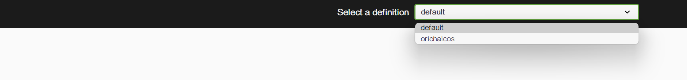

Swagger¶
1、概述¶
导语
相信无论是前端还是后端开发，都或多或少地被接口文档折磨过。前端经常抱怨后端给的接口文档与实际情况不一致。后端又觉得编写及维护接口文档会耗费不少精力，经常来不及更新。其实无论是前端调用后端，还是后端调用后端，都期望有一个好的接口文档。但是这个接口文档对于程序员来说，就跟注释一样，经常会抱怨别人写的代码没有写注释，然而自己写起代码起来，最讨厌的，也是写注释。所以仅仅只通过强制来规范大家是不够的，随着时间推移，版本迭代，接口文档往往很容易就跟不上代码了。
什么是 Swagger？
发现了痛点就要去找解决方案。解决方案用的人多了，就成了标准的规范，这就是 Swagger 的由来。通过这套规范，你只需要按照它的规范去定义接口及接口相关的信息。再通过 Swagger 衍生出来的一系列项目和工具，就可以做到生成各种格式的接口文档，生成多种语言的客户端和服务端的代码，以及在线接口调试页面等等。这样，如果按照新的开发模式，在开发新版本或者迭代版本的时候，只需要更新 Swagger 描述文件，就可以自动生成接口文档和客户端服务端代码，做到调用端代码、服务端代码以及接口文档的一致性。
但即便如此，对于许多开发来说，编写这个 ym l或 json 格式的描述文件，本身也是有一定负担的工作，特别是在后面持续迭代开发的时候，往往会忽略更新这个描述文件，直接更改代码。久而久之，这个描述文件也和实际项目渐行渐远，基于该描述文件生成的接口文档也失去了参考意义。所以作为Java 届服务端的大一统框架 Spring，迅速将 Swagger 规范纳入自身的标准，建立了 Spring-swagger 项目，后面改成了现在的 Springfox。通过在项目中引入 Springfox，可以扫描相关的代码，生成该描述文件，进而生成与代码一致的接口文档和客户端代码。这种通过代码生成接口文档的形式，在后面需求持续迭代的项目中，显得尤为重要和高效。
Swagger 是一个规范和完整的框架，用于生成、描述、调用和可视化 RESTful 风格的 Web 服务。总体目标是使客户端和文件系统作为服务器以同样的速度来更新。文件的方法、参数和模型紧密集成到服务器端的代码，允许 API 来始终保持同步。Swagger 让部署管理和使用功能强大的 API 从未如此简单。
这个解释简单点来讲就是说，Swagger 是一款可以根据 RESTful 风格生成接口开发文档，并且支持做测试的一款中间软件。
为什么要使用 Swagger？
- 对于后端开发人员来说： 不用再手写 WiKi 接口拼大量的参数，避免手写错误 对代码侵入性低，采用全注解的方式，开发简单 方法参数名修改、增加、减少参数都可以直接生效，不用手动维护 缺点：增加了开发成本，写接口还得再写一套参数配置
- 对于前端开发来说 后端只需要定义好接口，会自动生成文档，接口功能、参数一目了然 联调方便，如果出问题，直接测试接口，实时检查参数和返回值，就可以快速定位是前端还是后端的问题
- 对于测试 对于某些没有前端界面UI的功能，可以用它来测试接口 操作简单，不用了解具体代码就可以操作
2、Spring Boot 集成 Swagger 3.0¶
2.1、搭建环境¶
-
新建一个 Spring Boot 项目
-
导入相关依赖
<!-- https://mvnrepository.com/artifact/io.springfox/springfox-boot-starter --> <dependency> <groupId>io.springfox</groupId> <artifactId>springfox-boot-starter</artifactId> <version>3.0.0</version> </dependency> -
写一个 Hello 测试下
@RestController public class HelloController { @GetMapping("/hello") public String hello() { return "hello"; } } -
编写一个 SwaggerConfig.java 开启 Swagger
@Configuration @EnableOpenApi public class SwaggerConfig { } -
访问 http://localhost:8080/swagger-ui/index.html

2.2、Swagger 3.0 配置¶
Swagger 的实例 Bean 是 Docket，所以通过配置 Docket 实例来配置 Swagger。
先在 SwaggerConfig.java 中写一个 Docket 的 Bean 实例：
@Bean
public Docket docket(){
return new Docket()
}
2.2.1、DocumentationType¶
这个时候发现构造函数需要一个参数，先别急，点进 Docket 构造函数源码看看：

可以看到这里需要一个 DocumentationType，那么点进去看看是啥：

可以看到，它提供了三个构造好的 DocumentationType 常量，设置了使用 Swagger 哪个版本。这里使用的是 Swagger 3.0，所以给出的参数是 DocumentationType.OAS_30：
@Bean
public Docket docket() {
return new Docket(DocumentationType.OAS_30);
}
2.2.2、Docket¶
再回去反观 Docket 的其他源码：

可以看见 Docket 提供了很多可以配置的属性，并且提供了相应的 setter（注：方法与属性名同名，返回值是 this (链式编程)）

它设置默认的分组 DEFAULT_GROUP_NAME 是 default，没错，这就和右上角的 spec 对应上了：


另外，还有很多可以自行配置的属性，前面的 DocumentationType 就是其中之一。
2.2.3、ApiInfo¶
ApiInfo 见名知意，提供了一些基本信息的配置，这些配置信息可以显示 UI 界面上。同样的，点进它的源码看看：

可以看到，它提供了 8 个可以配置属性，根据名字也能猜出其中的意思：
- version：API 版本
- title：文档标题
- description：文档描述
- termsOfServiceUrl：团队链接
- license：许可
- licenseUrl：许可链接
- contact：联系人信息
- vendorExtensions：扩展信息
而在 ApiInfo 中还有一个默认配置 DEFAULT，它的详细信息在类的最下方：

它看起来是不是很熟悉？没错，它就是在不做任何配置下启动 Swagger 显示的基本信息：

那么现在可以配置自己的 ApiInfo：
ApiInfo 中没有提供 setter，所以可以通过 ApiInfo 的构造函数去构建，也可以通过 ApiInfoBuilder 去逐项赋值
@Bean
public Docket docket() {
return new Docket(DocumentationType.OAS_30).apiInfo(getApiInfo());
}
public ApiInfo getApiInfo() {
return new ApiInfoBuilder()
.title("文档标题")
.description("测试的接口文档")
.version("v1.0")
.termsOfServiceUrl("baidu.com")
.contact(new Contact("Orichalcos", "https://github.com/0richalcos", "xox.zhe@foxmail.com"))
.build();
}
然后重启 Spring Boot 项目：

2.2.4、ApiSelectorBuilder¶
构建 Docket 时通过 select() 方法配置怎么扫描接口，它会返回一个 ApiSelectorBuilder 对象

点开 ApiSelectorBuilder 源码：

可以看到需要配置的是 requestHandlerSelector 和 pathSelector。
requestHandlerSelector
接口扫描方案。通过 ApiSelectorBuilder 下的 apis() 方法配置（也是链式编程），在 RequestHandlerSelectors.java 中提供了配置方案：

- any()：扫描所有，项目中的所有接口都会被扫描到
- none()：不扫描接口
- withClassAnnotation()：扫描类上的注解，比如
withClassAnnotation(Controller.class)只扫描有 @Controller 注解的类中的接口 - withMethodAnnotation()：扫描方法上的注解，比如
withMethodAnnotation(GetMapping.class)只扫描 @GetMapping 标识的 GET 请求 - basePackage()：扫描指定路径，比如
basePackage(“com.test.controller”)只扫描 controller 包
常用的是 basePackage()，只去扫描 controller 包。
pathSelector
接口过滤方案。有些时候我们并不是希望所有的 Rest API 都呈现在文档上，这种情况下 Swagger 提供给我们了两种方式配置，一种是基于 @ApiIgnore 注解，另一种是在 Docket 上增加筛选。两种方式的区别是，Docket 配置的规则，通过筛选 API 的 url 来进行过滤，可以对多个接口器过滤作用，而 @ApiIgnore 只能作用于单个接口。
Docket 配置规则这种方式通过 ApiSelectorBuilder 的 paths() 方法配置，在 PathSelectors 提供了配置方案：

- any()：任何路径都满足条件
- none()：任何路径都不满足条件
- regex()：通过正则表达式控制
- ant()：通过 ant 控制
PS：常用的是 any()，不做特殊处理。
在 ApiSelectorBuilder 中提供了默认配置方案 DEFAULT，即不扫描所有标有 @ApiIgnore 注解的类和方法，允许所有的请求路径：

所以，在一开始，我们才会看到列表中除了一开始自己写的 hello-contoller，还有 basic-error-controller 这些我们自己没配置过的接口：

那么在 docket() 中增加配置：
@Bean
public Docket docket() {
return new Docket(DocumentationType.OAS_30)
.apiInfo(apiInfo())
.select()
.apis(RequestHandlerSelectors.basePackage("com.orichalcos.controller"))
.paths(PathSelectors.any())
.build();
}
重启项目后发现只有 hello-controller 了：

2.2.5、groupName¶
groupName 就是上面说的右上角的分组选项，一般项目中不同的开发人员，可以创建不同的分组，默认的分组是 default。我们可以通过配置多个 Docket 去实现分组：
@Bean
public Docket docket() {
return new Docket(DocumentationType.OAS_30)
.apiInfo(apiInfo())
.select()
.apis(RequestHandlerSelectors.basePackage("com.orichalcos.controller"))
.paths(PathSelectors.any())
.build();
}
public ApiInfo apiInfo() {
return new ApiInfoBuilder()
.title("文档标题")
.description("测试的接口文档")
.version("v1.0")
.termsOfServiceUrl("baidu.com")
.contact(new Contact("Orichalcos", "https://github.com/0richalcos", "xox.zhe@foxmail.com"))
.build();
}
@Bean
public Docket docket1(){
return new Docket(DocumentationType.OAS_30)
.groupName("orichalcos");
}

2.2.6、useDefaultResponseMessages¶
点开接口文档中的接口，可以看见，在 Response 中 Swagger 默认提供了 200,401,403,404 这几个状态码

但是，在实际开发中，大多数都是自定义状态码的；所以，就可以通过 useDefaultResponseMessages(false) 关闭默认状态码：
@Bean
public Docket docket() {
return new Docket(DocumentationType.OAS_30)
.apiInfo(apiInfo())
.useDefaultResponseMessages(false)
.select()
.apis(RequestHandlerSelectors.basePackage("com.orichalcos.controller"))
.paths(PathSelectors.any())
.build();
}
重启项目后，可以看到，原先的 401,403,404 没有了：

2.2.7、enabled¶
在开发、测试时候需要启动 Swagger，但是在实际项目发布上线了就要关闭它，因为一旦一些重要的接口暴露是很危险的，而且一直运行着 Swagger 也会浪费系统资源。
所以可以通过 enable(false) 来关闭 Swagger，但是如果每次都手动操作显得有些笨拙，我们可以根据当前项目的环境来决定是否开启 Swagger。
-
创建两个新的配置文件，application-dev.properties 和 application-por.properties，分别代表正式环境和开发环境的配置。在这两个配置文件中，分别把启动端口设为 8081 和 8080：

-
修改 application.properties，将当前的环境设为 dev：
spring.profiles.active=dev -
修改 SwaggerCofing.java，让它根据环境开启 Swagger：
@Bean //注：这里注入了 Environment 对象，目的是获取系统环境 public Docket docket(Environment environment) { //设置要显示 swagger 的环境（dev 或者 test） Profiles profiles = Profiles.of("dev", "test"); //判断当前是否处于该环境 boolean flag = environment.acceptsProfiles(profiles); return new Docket(DocumentationType.OAS_30) .apiInfo(apiInfo()) .useDefaultResponseMessages(false) .enable(flag) .select() .apis(RequestHandlerSelectors.basePackage("com.orichalcos.controller")) .paths(PathSelectors.any()) .build(); }然后重启项目，就可以发现，8080 端口已经无法访问了，但8081 可以：

2.3、注解使用¶
2.3.1、Controller 注解¶
@Api
放在请求的类上，与 @Controller 并列，说明类的作用，如用户模块，订单类等。
| 属性名称 | 备注 |
|---|---|
| value | url 的路径值 |
| tags | 如果设置这个值，value 的值会被覆盖 |
| description | 对 API 资源的描述 |
| basePath | 基本路径 |
| position | 如果配置多个 API，想改变显示的顺序位置 |
| produces | 如：application/json, application/xml |
| consumes | 如：application/json, application/xml |
| protocols | 协议类型，如: http、https、ws、wss |
| authorizations | 高级特性认证时配置 |
| hidden | 配置为 true，将在文档中隐藏 |
示例：
@Api(tags="订单模块")
@Controller
public class OrderController {
}
@ApiOperation
用在请求的方法上，说明方法的作用。
| 属性名称 | 备注 |
|---|---|
| value | 说明方法的作用 |
| notes | 方法的备注说明 |
示例：
@GetMapping("/hello")
@ApiOperation(value = "say hello~", notes = "备注")
public String hello() {
return "hello";
}
@ApiImplicitParams、@ApiImplicitParam
方法参数的说明。@ApiImplicitParams 包含一组参数说明，@ApiImplicitParam 为对单个参数的说明
@ApiImplicitParam 的参数：
| 属性名称 | 备注 |
|---|---|
| name | 参数名 |
| value | 参数的说明、描述 |
| required | 参数是否必填 |
| paramType | 参数放在哪个地方 - query => 请求参数的获取：@RequestParam - header => 请求参数的获取：@RequestHeader - path（用于 RESTful 接口） => 请求参数的获取：@PathVariable - body（请求体） => 请求参数的获取：@RequestBody - form（普通表单提交） |
| dataType | 参数类型 |
| defaultValue | 参数的默认值 |
| dataTypeClass | 参数类型的 Class |
示例：
@PostMapping("/hey")
@ResponseBody
@ApiOperation(value = "say hey!", notes = "备注")
@ApiImplicitParams({
@ApiImplicitParam(name = "username", value = "用户名", required = true, dataType = "String", dataTypeClass = String.class),
@ApiImplicitParam(name = "age", value = "年龄", required = true, dataType = "int", dataTypeClass = Integer.class)
})
public User hey(@RequestBody User user) {
return user;
}
被这个 paramType 坑过一次，当发 POST 请求的时候，当时接受的整个参数，不论用 body 还是 query，后台都会报 Body Missing 错误；这个参数貌似和 SpringMVC 中的 @RequestBody 冲突，去掉 paramType 对接口测试并没有影响
@ApiResponses、@ApiResponse
方法返回值的状态码说明。@ApiResponses 为方法返回对象的说明，@ApiResponse 为每个参数的说明。
@ApiResponse 的参数：
| 属性名称 | 备注 |
|---|---|
| code | 数字，例如 404 |
| message | 信息，例如 “请求参数没填好” |
| response | 抛出异常类 |
2.3.2、实体类注解¶
@ApiModel
用于 JavaBean 上面，表示对 JavaBean 的功能描述。
@ApiModelProperty
用在 JavaBean 的属性上面，说明属性的含义。
示例：
@Data
@AllArgsConstructor
@NoArgsConstructor
@ApiModel("用户")
public class User {
@ApiModelProperty(value = "用户名",required = true)
private String username;
@ApiModelProperty(value = "年龄",required = true)
private Integer age;
}
3、Swagger 2.0¶
其实上面的 Swagger 3.0 已经使用了大量的 2.0 注解，所以这里主要讲与集成 3.0 的不同之处。
pom.xml
<!--Swagger版本 2.9.2-->
<dependency>
<groupId>io.springfox</groupId>
<artifactId>springfox-swagger2</artifactId>
<version>2.9.2</version>
</dependency>
<dependency>
<groupId>io.springfox</groupId>
<artifactId>springfox-swagger-ui</artifactId>
<version>2.9.2</version>
</dependency>
SwaggerConfig.java
配置类中使用的 DocumentationType为 SWAGGER_2，启动 Swagger 的注解也不同：
@Configuration
@EnableSwagger2
public class SwaggerConfig {
@Bean
public Docket docket() {
return new Docket(DocumentationType.SWAGGER_2);
}
}
访问路径
Swagger 2.0 的 Swagger UI 的访问路径为：http://localhost:8080/swagger-ui.html
4、禁用 Swagger¶
除了前面提到的禁用方法，还有其他一些有意思的禁用方法。
使用注解 @Value()
@Value("${swagger.enable}")
private Boolean enable;
@Bean
public Docket docket() {
return new Docket(DocumentationType.SWAGGER_2)
.enable(enable);
}
swagger.enabled=true
使用注解@Profile({"dev", "test"})
表示在开发或测试环境开启，而在生产关闭：
@Configuration
@EnableSwagger2
@Profile({"dev", "test"})
public class SwaggerConfig {}
使用注解@ConditionalOnProperty
在测试配置或者开发配置中添加 swagger.enabled = true 即可开启，生产环境不填则默认关闭 Swagger。
@Configuration
@EnableSwagger2
@ConditionalOnProperty(name ="enabled" ,prefix = "swagger",havingValue = "true",matchIfMissing = true)
public class SwaggerConfig {}